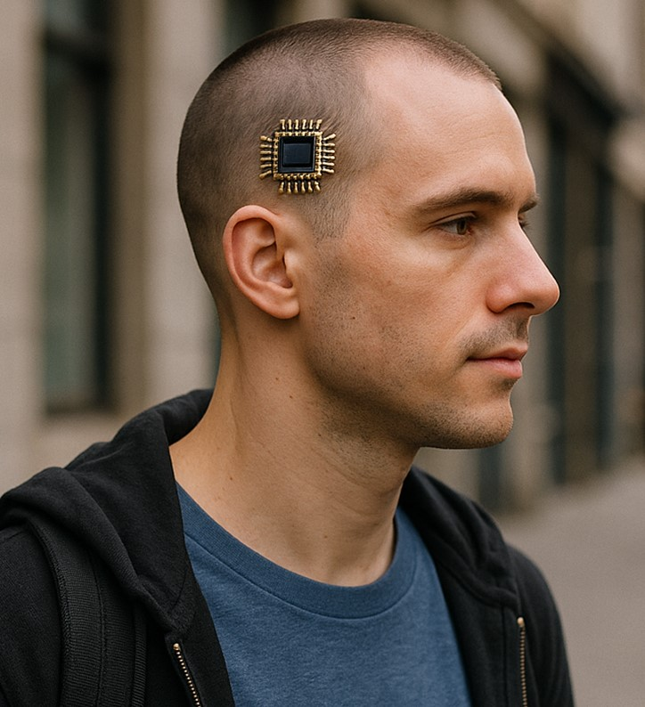

Les puces généralisées
Nos pensées notre vie contrôlé par une simple puce neuronale. Payer, facile suffit d’y penser et le virement se fait avec l’accord du détenteur de la puce, nos abonnement de train de métro et même un gps pour nous localiser tout et dedans voici une nouvelle ère, l’amélioration de l’homme aider par la technologie.

En 2035 tout homme et nouvelle naissance devra posséder une puce neuronal
Elle servira à faciliter les identifications et à contrôler plus facilement la population.
L’histoire de ces implants cérébraux est bien plus sombre que ça, certains pourront passer dans les mailles du filet, mais seront sanctionnés gravement s' ils étaient attrapés par l'État. Les résistants vivent dans la peur et doivent se cacher tandis que le reste de la population reste sagement à sa place tout en étant sous contrôle la population se fait muselé dans l’ombre tout en douceur.
Le monde est en paix… mais à quel prix ?
Aujourd’hui, nos souvenirs ne nous appartiennent plus entièrement. Ils peuvent être modifiés, manipulés, effacés. Par l’État, ou par des hackers qui, malgré les dispositifs de sécurité, parviennent à extraire ces fragments d’identité pour les revendre sur le marché noir. Des souvenirs qui sont ensuite réimplantés dans d’autres puces neuronales, brouillant les frontières entre réel et artificiel.
95 % de la population possède déjà ces puces
Vendues comme des gadgets révolutionnaires, on vante leur capacité à sauver des vies, notamment en cas de catastrophe naturelle : grâce à leur système GPS intégré, localiser un survivant n’a jamais été aussi simple.
Mais derrière cette promesse de sécurité se cache une réalité plus sombre : celle d’un monde où la mémoire elle-même devient une marchandise.

Présentation de la puce neuronal 2030
L’homme de demain
La puce neuronale n’a pas que des effets négatifs. Présentée comme un gadget révolutionnaire, elle promet de simplifier notre quotidien. Mais que peut-elle réellement faire ?
Au-delà du simple paiement par la pensée ou du remplacement de notre portefeuille, elle séduit peu... du moins en apparence.
Pourtant, ses avantages sont réels : elle décuple notre capacité de concentration, supprime les distractions lorsqu’elle est activée en mode focus, et surtout, elle peut détecter instantanément nos blessures ou maladies, nous indiquant les mesures à prendre pour nous soigner. À l’origine, elle a été conçue pour désengorger les hôpitaux, débordés lors des épidémies — de plus en plus fréquentes.
La puce a aussi remplacé nos téléphones, devenus obsolètes. Appeler un proche, écouter de la musique, effectuer une recherche : tout est désormais possible par la pensée. Ce progrès a permis de réduire considérablement notre consommation de ressources naturelles, la puce étant cinq fois moins énergivore qu’un smartphone.
Grâce à elle, notre empreinte écologique a diminué. Peut-être que l’État, en contrôlant les individus à travers cette technologie, cherche à préserver l’humanité… et l’empêcher de s’autodétruire.
Accueil
Partie 2